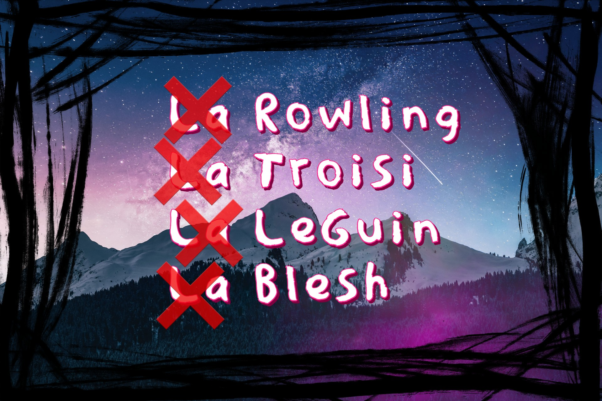
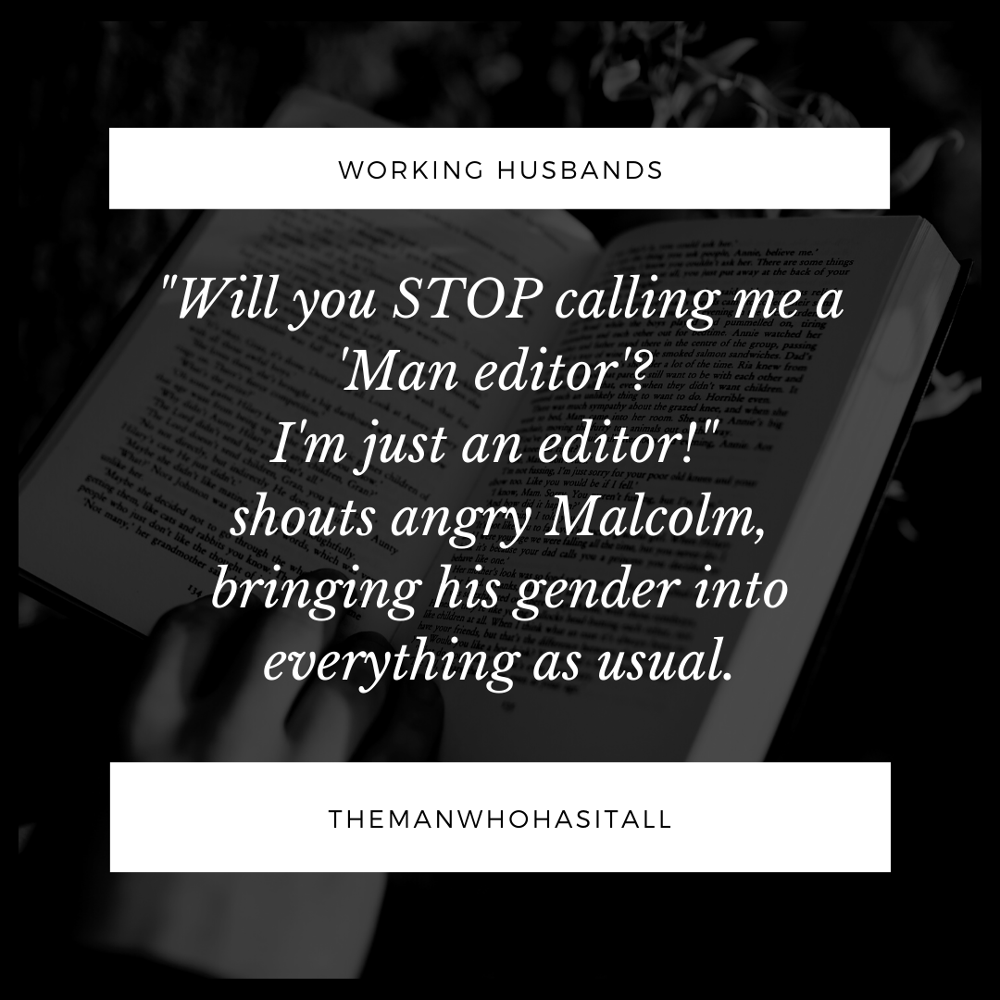
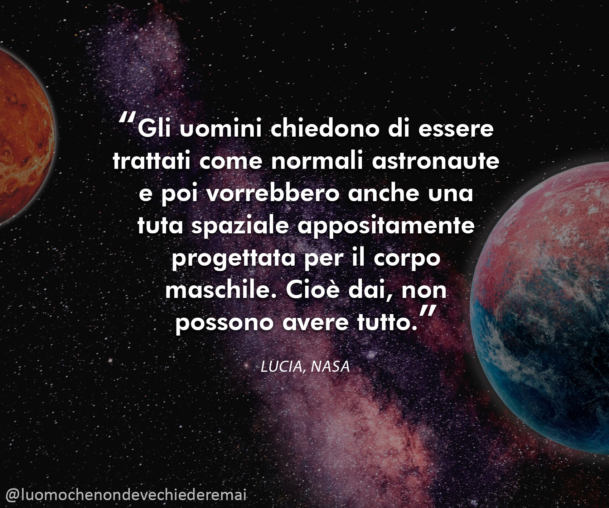

Miscellanea
Sessismo che non vediamo: l'articolo determinativo davanti al cognome femminile
8 marzo 2022

Preferisci i libri di Sanderson o i libri della Rowling?
Perché non chiamiamo gli autori “IL King”, “IL Gaiman”, “IL Calvino”, ma le autrici sono sempre “LA Allende”, “LA Rowling”, “LA Troisi?”
Fino a pochi decenni fa non erano molte le donne a intraprendere con successo la bistrattata carriera della scrittura (o, in generale, ad assumere posizioni di spicco nella società, come nella politica). Questa “stranezza” ci ha meritato addirittura un articolo determinativo tutto per noi. Che culo, neh?
La necessità di “sottolineare” il genere femminile dell’autrice non nasce con intenti malevoli. Per la maggior parte di noi, è semplicemente parte della lingua italiana. Per alcuni vuole invece essere un modo per differenziarci (o addirittura distinguerci con accezione positiva) dal genere maschile dominante in quasi tutti gli ambiti.
Ma la mia domanda è: perché dovrei essere elogiata in quanto donna quando si parla di letteratura? È proprio necessario?
Quale rilevanza ha il sesso di un autore sul contenuto della sua opera?
🌋 Nella nostra splendida società patriarcale, questa distinzione conferma soltanto che il sesso viene ancora usato come forma di giudizio. Pure quando si parla di scrittura.
Lo trovo discriminatorio, inutile e inopportuno.
ATTENZIONE: Questo articolo non vuole essere un’accusa verso chi usa e ha sempre usato l'articolo determinativo davanti al cognome femminile, ma un tentativo di sensibilizzazione.
Io per prima l'ho fatto per anni senza pensarci, e solo di recente ho iniziato a chiedermi davvero il perché di questa scelta inconsapevole.
Non mi piace fare cose senza pensare. Non mi piace dare cose per scontate, soprattutto quando si tratta di temi che mi stanno così tanto a cuore come la parità dei sessi e la scrittura. Prima di gridare al sessismo, mi sono informata, ho ascoltato pareri, e ho riflettuto.
🎯 La conclusione a cui sono giunta è che dovremmo eliminare l’articolo determinativo davanti ai cognomi femminili per:
- Non dare più importanza al sesso di una persona
- Dare invece credito ai risultati e ai meriti (o demeriti) della persona
- Rimuovere le discriminazioni nei confronti di tutti i sessi e di tutte le identità sessuali
- Mettere uomini e donne sullo stesso piano
Non c’è la benché minima ragione logica per usare l’articolo determinativo davanti al cognome di un’autrice!

Oddio, panico! Mi sento chiamato in causa! Mi metterò subito sulla difensiva (aka risposte alle polemiche più comuni):
 Ma così non siamo in grado di distinguere se l’autore è maschio o femmina!
Ma così non siamo in grado di distinguere se l’autore è maschio o femmina!
È così indispensabile sapere quello che uno scrittore ha tra le gambe o con quale genere si identifica? Stiamo parlando di libri. I fattori che dovrebbero influenzare la nostra lettura sono il genere del romanzo, lo stile di scrittura e il contenuto. Non chi l’ha scritto.
Oppure conoscere il sesso dell’autore influenza il tuo giudizio sul libro? Il sesso dell’autore conta più dell’opera e del suo risultato?
Se due autori hanno lo stesso cognome come faccio a distinguerli?
Usa anche il loro nome, o le iniziali del loro nome.
"Solo tu ti fai questi problemi"
Non puoi usare le tue esperienze aneddotiche per affermare una verità generale.
Se a te non dà fastidio essere chiamata “LA Pincopallini”, o la mia lotta ti sembra superflua, questo non significa che altre donne la pensino allo stesso modo. Magari potresti cercare di empatizzare con la loro esperienza, cercare di capire la motivazione di fondo da cui nasce questo problema.
Per favore, soffermati a pensare su ogni aspetto di questa problematica, invece di sentirti sotto attacco solo perché questo concetto è fuori dalla tua comfort zone e non rispecchia le abitudini di tutta una vita.
Abitudine è tradizionalismo. Tradizionalismo è, quasi sempre, sessismo.
"Si è sempre fatto così", "è solo una parola"
Le parole sono lo scheletro della società moderna. Viviamo di parole. Servono a concretizzare i concetti in modo da comprendere meglio la realtà. Pensiamo agli insulti: una fetta enorme è fondata su insulti discriminatori, razziali, sull’aspetto fisico, e maschilisti, e questi trasformano la nostra visione delle cose in maniera impercettibile e costante.
Quindi no, l’articolo determinativo di fronte al cognome di una donna non è “solo una parola”, e rema contro il tentativo di normalizzare scrittore e scrittrice. Come dare a un uomo della “femminuccia” con accezione dispregiativa, anche questa differenziazione ci porta sempre più lontani dalla parità dei sessi.
Lavorare sulla nostra lingua non eradicherà mai il sessismo da un giorno all'altro, ma senza dubbio ci porterà ad acquisire la mentalità del "mi soffermo a pensare cosa sto dicendo" che trovo indispensabile per influenzare la nostra visione della società.
Nessuno diventa antisessista dall'oggi al domani. È un lavoro lento e faticoso anche per chi ha le migliori intenzioni, e dobbiamo usare ogni arma in nostro potere per cambiare mentalità.
"Sei una nazifemminista politically correct"
Questo articolo vuole solo togliere un sassolino dal muro che ci separa dalla totale parità dei sessi. Personalmente, voglio essere trattata alla stregua del mio collega maschio. Voglio che quando qualcuno compra un mio libro non si chieda chi l’ha scritto, ma se lo goda indipendentemente dal mio sesso.
Sto chiedendo di vincere concorsi o di essere scelta per collaborazioni NON perché sono femmina, ma per come scrivo.
Ti sembra nazifemminismo?
"Ci sono problemi più gravi"
Ovvio che ci sono problemi più gravi, e io mi impegno in tanti modi per combatterli. Questo non significa che sono pronta a trascurare un'incongruenza con cui mi scontro ogni giorno in quanto scrittrice.
È meno importante della violenza di genere? Certo. Ma forse è qui dove ANCHE TU puoi iniziare ad agire. Adesso. Senza sforzo.
Contribuendo in qualche modo a questa lotta.
"Va contro le regole dell’italiano"
Secondo l’Accademia della Crusca, l’articolo davanti ai cognomi femminili ha lo scopo di individuare il genere della persona a cui ci si riferisce e “fare chiarezza”. Ma la mia domanda, ancora una volta, è: perché questa chiarezza dovrebbe mai essere necessaria?
Quindi, se sei un assiduo seguace delle regole dell’italiano, puoi sempre formulare la frase in modo che non contenga l’articolo. “Licia Troisi”, invece che “la Troisi”. “J.K. Rowling” invece che “la Rowling”.
Chiamarmi “Titania Blesh” invece che “la Blesh” non ti farà arrivare in ritardo all'appuntamento con l'Agenzia delle Entrate, giuro.

🎯 CONCLUSIONE
L’italiano è una lingua intrinsecamente sessista (lo dice l’Accademia della Crusca, mica solo io).
In inglese siamo già secoli avanti, con la presenza dei genderless nouns e la più recente – e ci voleva! – introduzione del “they” come pronome singolare neutro.
Ma viviamo in un mondo in continua evoluzione, e ogni piccola azione che lavora a cambiare la nostra mentalità può solo aiutarci a migliorare come esseri umani.
Il sessismo si combatte così. Pensando TANTO. Riflettendo continuamente sulle motivazioni dietro ogni azione, dietro ogni parola, dietro ogni pensiero impulsivo. Perché ognuno dei nostri pensieri è stato forgiato da una società profondamente maschilista, e l’unico modo per liberarcene è fare piccoli sforzi, poco a poco, fino a quando queste stranezze diventeranno la nuova normalità.
Io sono ancora lontana da riuscire in questa impresa, ma cosa faccio quando mi succede di essere involontariamente sessista? Mi correggo. Mi scuso, e cerco di stare più attenta la prossima volta.
Ci tenevo a portare sul tavolo questo argomento perché mi fa soffrire, e sembra che venga del tutto ignorato o bypassato anche dai miei colleghi scrittori e scrittrici. A volte, per comprendere un concetto mi ci devo soffermare a lungo e pensare perché la cosa mi urta così tanto. Per me è un continuo realizzare che tante delle cose che faccio sono sessiste a causa della società. E ogni volta che me ne rendo conto, o me lo fanno notare, mi sembra di aver fatto un piccolo passo avanti.
Questo è il mio piccolo contributo, insieme ai miei libri, contro il sessismo nell’ambiente letterario.
Scrittori e lettori, facciamo insieme questo passo verso il futuro.
– Titania Blesh (e non "la Blesh", grazie!)
🌋 Volete saperne di più?
Il Sessismo nella Lingua Italiana di Alma Sabatini
Femminili Singolari di Vera Gheno
Volete imparare a riconoscere stereotipi di genere a cui non avevate mai pensato? La pagina Facebook ironica "L'uomo che non deve chiedere mai" ribalta gli stereotipi di genere con dei meme che fanno spaccare.